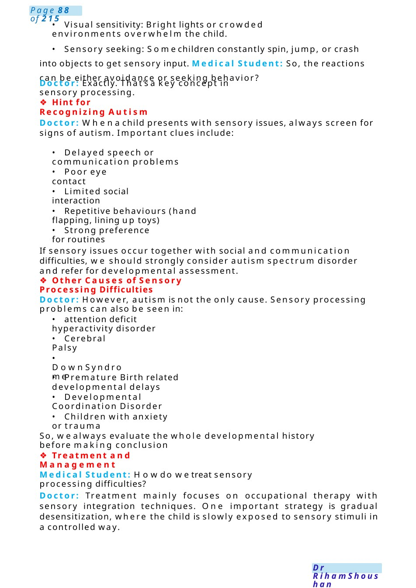
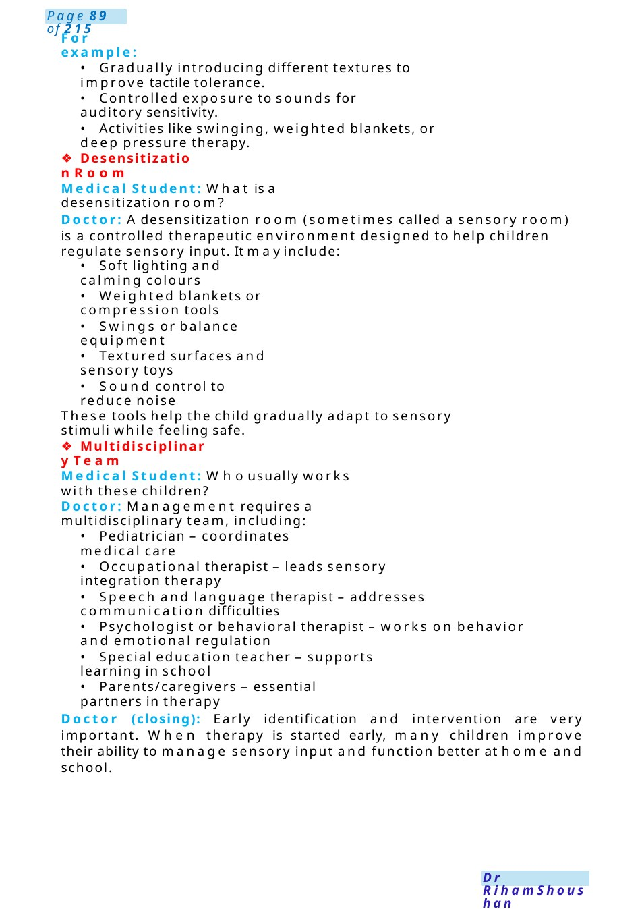

Autism with Sensory Processing Disorder
Communication Scenario: Medical Student Discussion about Sensory Processing Disorder and Autism Setting: Paediatric clinic teaching round. Apaediatrician is discussing a case with a medical student.
Scenario Summary
Communication Scenario: Medical Student Discussion about Sensory Processing Disorder and Autism Setting: Paediatric clinic teaching round. Apaediatrician is discussing a case with a medical student.
Full Original Scenario

Autism with Sensory Processing Disorder
Communication Scenario: Medical Student Discussion about Sensory Processing Disorder and Autism
Setting: Paediatric clinic teaching round. Apaediatrician is discussing a case with a medical student.
Doctor: Today we’ll discuss Sensory Processing Disorder (SPD) and how it often appears in children with autism spectrum disorder. Have you heard about SPDbefore?
Medical Student: I know it has something to do with howchildren respond to sensory information, but I’m not very clear about it.
Doctor: That’s correct. Sensory Processing Disorder means the brain has difficulty receiving and responding properly to sensory input such as touch, sound, light, taste, smell, movement, or body position. The child may react too strongly (hypersensitive) or too weakly (hyposensitive) to these sensations.
Medical Student: Howdoes this relate to autism?
Doctor: Many children with autism spectrum disorder have sensory processing difficulties. For example, a child with autism maycover their ears whenhearing normal sounds, avoid certain clothing textures, or constantly seek movement like spinning or jumping.
❖Examples of Sensory Processing Problems
Doctor: Let megive you some examples:
- Auditory sensitivity: The child cries or covers ears when hearing vacuum cleaners or loud classrooms.
- Tactile sensitivity: The child refuses certain fabrics or avoids being touched.

- Visual sensitivity: Bright lights or crowded environments overwhelm the child.
- Sensory seeking: Somechildren constantly spin, jump, or crash into objects to get sensory input. Medical Student: So, the reactions can be either avoidance or seeking behavior?
Doctor: Exactly. That’s a key concept in sensory processing.
❖Hint for Recognizing Autism
Doctor: Whena child presents with sensory issues, always screen for signs of autism. Important clues include:
- Delayed speech or communication problems
- Poor eye contact
- Limited social interaction
- Repetitive behaviours (hand flapping, lining up toys)
- Strong preference for routines
If sensory issues occur together with social and communication difficulties, we should strongly consider autism spectrum disorder and refer for developmental assessment.
❖Other Causes of Sensory Processing Difficulties
Doctor: However, autism is not the only cause. Sensory processing problems can also be seen in:
- attention deficit hyperactivity disorder
- Cerebral Palsy
- Down Syndrome
- Premature Birth related developmental delays
- Developmental Coordination Disorder
- Children with anxiety or trauma
So, wealways evaluate the whole developmental history before making conclusion
❖Treatment and Management
Medical Student: Howdo wetreat sensory processing difficulties?
Doctor: Treatment mainly focuses on occupational therapy with sensory integration techniques. One important strategy is gradual desensitization, where the child is slowly exposed to sensory stimuli in a controlled way.

For example:
- Gradually introducing different textures to improve tactile tolerance.
- Controlled exposure to sounds for auditory sensitivity.
- Activities like swinging, weighted blankets, or deep pressure therapy.
❖Desensitization Room
Medical Student: What is a desensitization room?
Doctor: Adesensitization room (sometimes called a sensory room) is a controlled therapeutic environment designed to help children regulate sensory input. It mayinclude:
- Soft lighting and calming colours
- Weighted blankets or compression tools
- Swings or balance equipment
- Textured surfaces and sensory toys
- Sound control to reduce noise
These tools help the child gradually adapt to sensory stimuli while feeling safe.
❖Multidisciplinary Team
Medical Student: Whousually works with these children?
Doctor: Management requires a multidisciplinary team, including:
- Pediatrician – coordinates medical care
- Occupational therapist – leads sensory integration therapy
- Speech and language therapist – addresses communication difficulties
- Psychologist or behavioral therapist – works on behavior and emotional regulation
- Special education teacher – supports learning in school
- Parents/caregivers – essential partners in therapy
Doctor (closing): Early identification and intervention are very important. When therapy is started early, many children improve their ability to manage sensory input and function better at home and school.

Challenging Behaviour
Station Title: Explaining Challenging Behaviour in a Toddler
Setting: Paediatric clinic
Role Player: Mother of a 3-year-old boy (Omar)
⚕️ Candidate Role: Paediatric doctor
Your Tasks:
- Explore mother’s concerns
- Explain what “challenging behaviour” means
- Differentiate normal behaviour from pathology
- Address concern about ADHDand medication
- Reassure and give practical advice
Opening &Agenda Setting
Candidate: “Hello, I’m Dr ___. I understand you’re worried about Omar’s behaviour. Could you tell mewhat you’ve been noticing?”
Exploring Concerns
Mother (prompt): “He’s very naughty—always running, not listening, lots of tantrums. My neighbour's child had the same and was diagnosed with ADHDand given medication. I think Omar needs that too.”